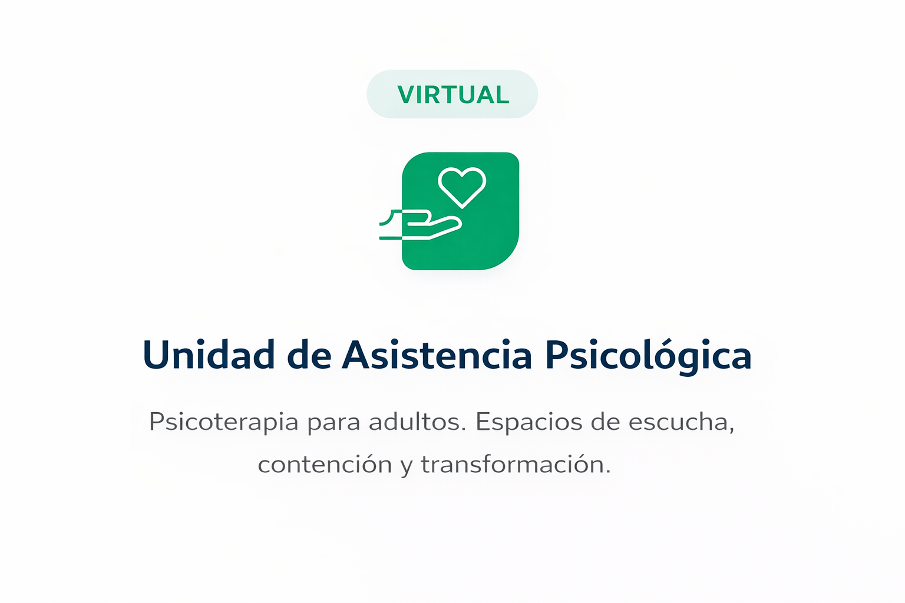
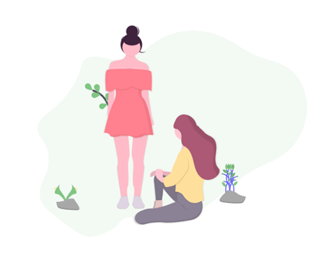
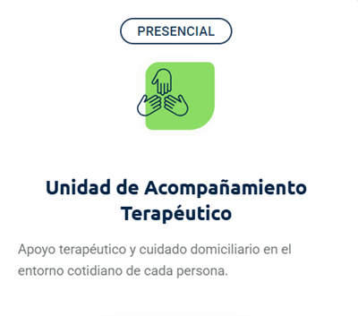
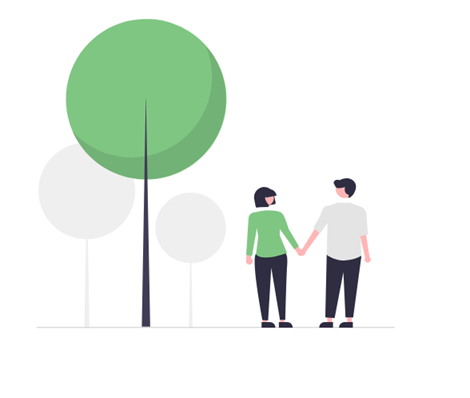
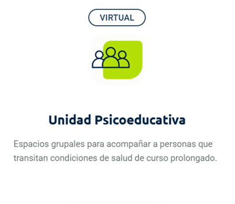
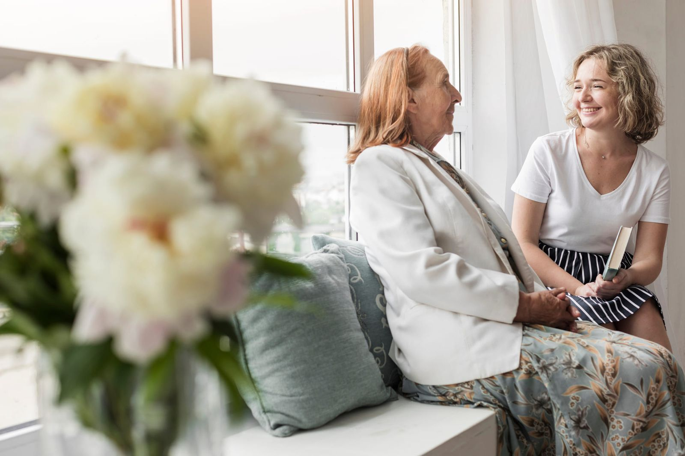
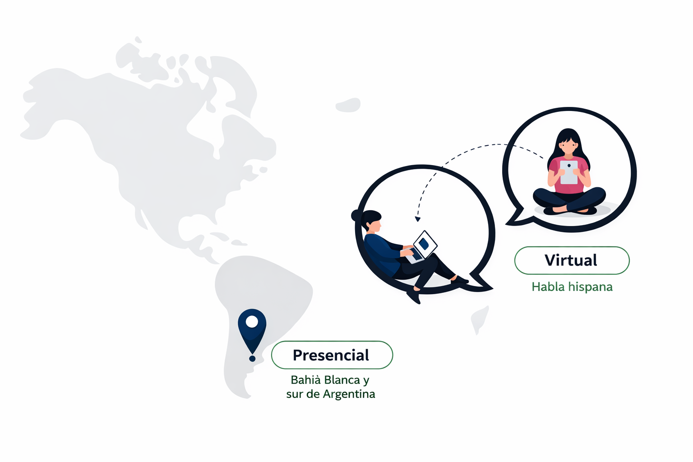

Un espacio integral para el cuidado de la salud mental.
Estamos comprometidos con el bienestar físico, emocional y social de cada historia y cada proceso, por eso nuestro trabajo parte siempre de una evaluación diagnóstica individual. A partir de allí, diseñamos objetivos y estrategias de intervención , orientados a brindar un acompañamiento cercano, respetuoso y eficaz.
+10
servicios especializados
+100
familias nos avalan
+70
profesionales calificados


Equipo
multidisciplinario
Servicios Especiales
Asistencia Personal
Unidades de atención
Somos un equipo interdisciplinario que trabaja con sensibilidad y compromiso, adaptando cada estrategia a las necesidades individuales y familiares. Ofrecemos servicios en el sur de Argentina, y para toda Latinoamérica y España.
Equipo profesional altamente calificado
Supervisión profesional
Personal confiable y seguro
Atención personalizada

Virtual
Presencial
Unidad de Asistencia Psicológica
Psicoterapia para adultos. Espacios de escucha, contención y transformación.
Presencial
Unidad de Acompañamiento Terapéutico
Apoyo terapéutico y cuidado domiciliario en el entorno cotidiano de cada persona.
Virtual
Unidad Psicoeducativa
Espacios grupales para acompañar a personas que transitan condiciones de salud de curso prolongado.
- Unidad de Asistencia Psicológica
- Unidad de Acompañamiento Terapéutico
- Unidad Psicoeducativa

Profesionalismo, calidez y compromiso.
La Unidad Asistencia Psicológica está dedicada a brindar atención psicológica especializada a personas adultas, adaptándose a sus tiempos, necesidades y contextos. Ofrecemos dos modalidades: sesiones presenciales en consultorio y atención virtual a través de telepsicología, garantizando accesibilidad y continuidad terapéutica.
Nuestro equipo clínico trabaja desde una perspectiva integradora, respetuosa y empática, creando espacios seguros donde cada persona pueda explorar sus emociones, resignificar experiencias y construir herramientas para afrontar sus desafíos. Ya sea en el consultorio o desde la comodidad del hogar, el vínculo terapéutico se sostiene con profesionalismo, calidez y compromiso.
Terapia psicológica individual
Espacio terapéutico personalizado para trabajar dificultades emocionales, conductuales y vinculares. El enfoque es en terapia cognitivo-conductual, orientada a objetivos definidos junto al paciente.
Tratamiento de conductas adictivas
Intervención psicológica para el acompañamiento y tratamiento de distintas adicciones:
- Ludopatía.
- Drogadependencia.
- Adicciones psicológicas (uso problemático de tecnologías, entre otras).
Atención a traumas y eventos críticos
Abordaje especializado de experiencias traumáticas que impactan en la salud mental, tales como:
- Catástrofes naturales.
- Accidentes de tránsito.
- Procesos migratorios y desarraigo.
- Trauma social vinculado a conflictos, guerras o dictaduras.
Innovación terapéutica
Incorporamos herramientas tecnológicas que potencian el proceso terapéutico y mejoran la experiencia clínica:
- Realidad virtual, para el abordaje de fobias, ansiedad y exposición controlada.
- Biofeedback, para el entrenamiento en autorregulación emocional y manejo del estrés.
- Simulador de manejo, orientado a trastornos asociados a la conducción.
- Luminoterapia, como complemento en tratamientos específicos.
Servicios para instituciones y sindicatos
Intervención psicológica para el acompañamiento y tratamiento de distintas adicciones:
- Ludopatía.
- Drogadependencia.
- Adicciones psicológicas (uso problemático de tecnologías, entre otras).

Cómo comenzar
Comunicate
a través de una de nuestras vías de contacto.
Coordinamos
un primer encuentro sin cargo para conocernos. Puede ser virtual o presencial.
Acordamos
los próximos pasos hacia el camino de transformación.
Creemos que el proceso terapéutico es un camino de transformación, y estamos acá para acompañarlos.

Acompañamiento profesional a donde más lo necesitás: tu casa, tu espacio, tu realidad.
La Unidad de Acompañamiento Terapéutico está pensada para brindar apoyo terapéutico en el entorno cotidiano de cada persona. Sabemos que, en muchos casos, el hogar es el espacio más significativo para sostener procesos de salud mental, por eso ofrecemos intervenciones clínicas y acompañamientos personalizados directamente en el domicilio.
Nuestro equipo interdisciplinario trabaja con sensibilidad y compromiso, adaptando cada estrategia a las necesidades individuales, familiares y contextuales. Acompañamos desde lo terapéutico, lo emocional y lo vincular, favoreciendo la autonomía, la inclusión y la continuidad del tratamiento en un entorno seguro y familiar.
Acompañamiento Terapéutico para Jóvenes y Adultos (SAT18+)
Acompañamiento terapéutico para personas mayores de 18 años que atraviesan dificultades emocionales, psicológicas o sociales. Brindamos apoyo en la vida cotidiana para favorecer el bienestar, la autonomía y la integración social, en el hogar o en otros espacios significativos.
- Plan de trabajo personalizado con evaluación inicial.
- Acompañamiento en crisis vitales, trastornos mentales, enfermedades crónicas.
- Supervisión profesional permanente.
Acompañamiento Domiciliario para Niños y Adolescentes (SADENA)
Servicio terapéutico destinado a niños y adolescentes que requieren apoyo especializado en su entorno familiar. Trabajamos de manera articulada con la familia y el equipo de salud para favorecer el desarrollo emocional, social y conductual. Incluye:
- Acompañamiento terapéutico en el hogar.
- ATS especializadas en niñez y adolescencia.
- Objetivos terapéuticos claros y trabajo en equipo.
Integración Escolar para Personas con Discapacidad (SIED)
Servicio integral que acompaña el proceso de inclusión escolar de niños y adolescentes con discapacidad. Articulamos escuela, familia y profesionales de la salud para garantizar una integración efectiva y sostenida. Incluye:
- Plan de trabajo personalizado.
- Selección y supervisión del asistente externo.
- Comunicación permanente con la institución.
Medicación a Domicilio
Administración de medicamentos en el hogar, con enfermeros profesionales y control de signos.
- Plan de cuidados personalizado.
- Control cardíaco, respiratorio y de temperatura.
- Atención continua durante todo el año.
Cuidados Domiciliarios y Asistencia Personal (CD)
Servicio de cuidado integral en el hogar para personas que han perdido parte de su autonomía por edad, enfermedad o discapacidad. Incluye:
- Apoyo en higiene, alimentación y movilidad.
- Estimulación emocional y compañía.
- Atención especializada para adultos mayores.
Cuidados Temporarios (SECUT)
Servicio flexible de cuidado por períodos cortos, adaptado a situaciones específicas.
- Cobertura de turnos internacionales o nacionales.
- Acompañamiento a estudios médicos y actividades recreativas.
- Contratación por horas, días o semanas.
Acompañamiento Terapéutico en Salud Mental y Adicciones (SATA)
Programa de recuperación, reinserción social y fortalecimiento de recursos personales.
- Equipo interdisciplinario (psicólogos, psiquiatras, ATS).
- Articulación con familia y red de tratamiento.
- Plan terapéutico flexible y supervisión continua.


Espacios grupales para fortalecer tu bienestar
La Unidad Psicoactiva - Programa de Educación Emocional para la Salud Psicofísica diseñamos y coordinamos espacios grupales para personas que atraviesan condiciones de salud psicofísica de curso prolongado. A través de talleres participativos, encuentros reflexivos y dinámicas de aprendizaje, promovemos la expresión emocional, el desarrollo de recursos personales y la construcción de una mejor calidad de vida en comunidad.
Desde hace más de ocho años sostenemos nuestra sede administrativa en Bahía Blanca, ofreciendo atención presencial y ampliando nuestro alcance a todo el territorio bonaerense incluido el AMBA mediante recursos tecnológicos que permiten una participación accesible y continua.
Talleres de Educación Emocional
Espacios grupales participativos orientados a desarrollar habilidades emocionales, mejorar el autoconocimiento y fortalecer estrategias de afrontamiento frente a situaciones de estrés, enfermedad o cambios vitales.
Encuentros reflexivos y grupos de apoyo
Propuestas grupales que facilitan la escucha, el intercambio de experiencias y la construcción de redes de apoyo, favoreciendo el bienestar emocional y la sensación de pertenencia.
Programas de Bienestar Psicofísico
Programas estructurados que integran salud mental, educación emocional y cuidado del cuerpo, dirigidos a personas que atraviesan condiciones de salud psicofísica de curso prolongado.
Programas de Salud Mental para Empresas, Sindicatos y Organizaciones
Intervenciones diseñadas a medida para contextos institucionales, orientadas a la prevención, el cuidado de la salud mental y el fortalecimiento de equipos de trabajo.
Bienestar Ocupacional
Acciones enfocadas en la prevención del estrés laboral, el agotamiento emocional y el síndrome de burnout, promoviendo entornos de trabajo más saludables, sostenibles y humanos.
Apoyo Psicoeducativo a Instituciones Educativas
Servicios de acompañamiento y orientación para instituciones educativas, docentes y equipos directivos, con foco en el bienestar emocional, la convivencia y la prevención de problemáticas psicosociales.
Modalidad de trabajo
Las actividades de la Unidad Psicoactiva se desarrollan principalmente en modalidad presencial, con sede en Bahía Blanca. Según la propuesta y la demanda, los programas, talleres y encuentros pueden ofrecerse también en otros puntos del sur de la Argentina, en articulación con instituciones, organizaciones y comunidades locales.
Contactanos y encontrá el acompañamiento que mejor se adapte a tu necesidad.
Servicios destacados
A través de nuestras tres unidades de atención ofrecemos una amplia variedad de servicios en salud
mental y
acompañamiento, adaptados a distintas necesidades y momentos de la vida.

Terapia psicológica para adultos
Atención individual para ansiedad, depresión, estrés, crisis vitales y dificultades emocionales.
Solicitar informaciónTecnología digital
Realidad virtual para las fobias, simulador de manejo de auto para conductores, biofeedback para el tratamiento de trastornos psicofísicos.
Solicitar informaciónAcompañamiento terapéutico
Apoyo profesional en la vida cotidiana para favorecer la autonomía, el bienestar emocional y la continuidad del tratamiento.
Solicitar informaciónAtención en adicciones
Abordaje integral de consumos problemáticos y procesos de recuperación, con acompañamiento al paciente y su familia.
Solicitar informaciónTratamiento de la ludopatía
Intervención psicológica especializada en juego compulsivo y otras adicciones conductuales.
Solicitar informaciónAtención a crisis y alta exigencia emocional
Abordaje de experiencias traumáticas, pérdidas, accidentes, migración y eventos críticos.
Solicitar informaciónIntegración escolar de personas con discapacidad
Acompañamiento para la inclusión educativa, articulando familia, escuela y equipo de salud.
Solicitar informaciónCuidados domiciliarios y asistencia personal
Apoyo en el hogar para personas mayores o con pérdida de autonomía, con foco en el bienestar integral.
Solicitar informaciónGrupos y talleres de educación emocional
Espacios grupales para fortalecer recursos emocionales, vínculos y calidad de vida.
Solicitar informaciónModalidad diferenciada
Una elaborada metodología de trabajo permite ofrecer en forma integrada

Nuestro Equipo
Somos un grupo de profesionales de la salud mental comprometidos con el cuidado integral de las personas, las familias y las comunidades. En Teacompañamos, trabajamos de forma interdisciplinaria, combinando la experiencia de psicólogos, psicopedagogos, trabajadores sociales, acompañantes terapéuticos, cuidadores domiciliarios y otros especialistas.
Mg. Hugo Amengual
Director
Magíster en Psicología. Psicólogo con más de 30 años de trayectoria en el ámbito de la salud mental, con experiencia en instituciones públicas y privadas dedicadas a la atención, la docencia y la formación profesional. Es fundador y director de Postgrados de Psicología (PdP), un centro virtual de formación continua para psicólogos iberoamericanos, y director de TeAcompañamos, proyecto que impulsa un enfoque interdisciplinario y accesible en el cuidado de la salud mental, tanto en formato presencial como virtual. Su labor se centra en promover espacios de apoyo profesional, innovación y cercanía, orientados al bienestar emocional de las personas, las familias y las comunidades del sur de Argentina y de países de habla hispana.
Magíster en Psicología
+30 años de trayectoria
CEO Fundador TeAcompañamos
Un gran equipo profesional
Contamos con profesionales idóneos para realizar las tareas de administración, Supervisión, Comunicación y la variada gama de especialistas como Acompañantes Terapéuticos, Cuidadores Domiciliarios, Psicopedagogos y Psicólogos. Todos mancomunados con una ética y profesionalidad que esta en la base fundante de nuestra organización. 2026 es nuestro noveno año ininterrumpido de trabajo profesional. Nuestro compromiso permanente, respeto al paciente y honestidad profesional.
Misión, visión y valores

Nuestra misión
Brindar servicios de salud mental y apoyo psicológico de calidad adaptados a las necesidades de cada persona y comunidad.
Nos enfocamos en ofrecer un espacio de escucha, contención y orientación, tanto presencial como virtual, que contribuya al bienestar y a la resiliencia emocional.
Nuestra visión
Construir una sociedad más consciente, empática y solidaria, donde el acceso a la salud mental sea un derecho garantizado y no un privilegio.
Queremos ser referentes en el diseño de servicios innovadores y confiables que acompañen a las personas en sus diferentes etapas de vida y en contextos de alta exigencia emocional.
Nuestros valores
- Compromiso humano: acompañamos con empatía, respeto y sensibilidad.
- Profesionalismo: trabajamos con equipos especializados en distintas áreas de la salud mental.
- Accesibilidad: buscamos que el apoyo psicológico llegue a todas las personas que lo necesitan.
- Confidencialidad: garantizamos un espacio seguro, ético y de confianza.
- Colaboración: creemos en el trabajo en red con profesionales, instituciones y comunidades.
Redes Sociales
A través de nuestros canales digitales generamos espacios de divulgación, orientación y diálogo, tanto para personas como para familias e instituciones. Son espacios pensados para profundizar, aprender y acceder a información clara y confiable, elaborada por nuestro equipo profesional.
Contacto
Si necesitás información, orientación o querés iniciar un proceso de atención, comunicate con nosotros por el medio que te resulte más cómodo. Nuestro equipo responderá a la brevedad.
Estamos para acompañarte
Juntos podemos encontrar el tipo de acompañamiento que mejor se adapte a tus necesidades o la de tu ser cercano.
+54 9 291 414-9933
Ubicación
Bahía Blanca, Buenos Aires, Argentina
Correo electrónico
info@teacompañamos.com
Lunes a viernes de 9 a 18 hs.
Consultas fuera de horario se reciben por WhatsApp o mail.
Atención presencial en el sur de Argentina.
Atención virtual para Latinoamérica y países de habla hispana.
¿Necesitás ayuda?